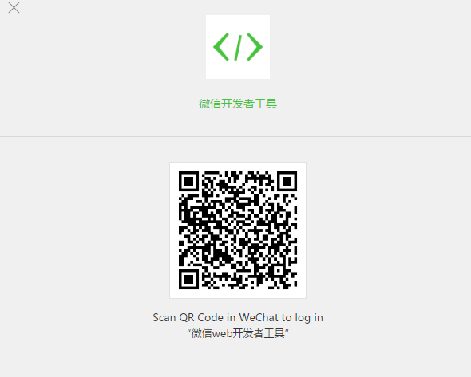
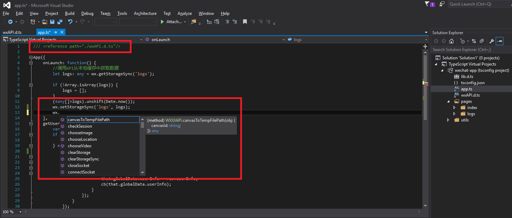

How to develop WeChat application by TypeScript
How to develop WeChat application by TypeScript
Introduction
This sample demonstrates how to develop WeChat application by TypeScript.
Sample prerequisites
• VS2015 with TypeScript extension
• NodeJS
• NPM
Building the sample
Each time after editing typescript code file, please run “tsc” command under the root folder which contains the file “tsconfig.json”.
Running the sample
• Open your WeChat client on your phone and the WeChat application dev tool
• Scan the QR code in WeChat mobile client

• Select the local application project 
• Add a new project and fill necessary information about project
• If you have no AppID, please click “No AppID”

• Then you will see the application demo content in the dev tool


Using the code
The WeChat application consists of two major parts:
• Application
• Page
The app is the entrance of the application. Page contains page view and page logic. For more information, please refer to https://code.msdn.microsoft.com/How-to-develop-WeChat-1105555e/https://code.msdn.microsoft.com/How-to-develop-WeChat-1105555e/https://mp.weixin.qq.com/debug/wxadoc/dev/?t=20161102.
wxAPI.d.ts
This file is WeChat js api typescript definition. You can take it for reference to all your typescript code and then you can get intelligence tip in visual studio because of this file.

Here is code snippets of application for your reference:
/// <reference path="./wxAPI.d.ts"/>
App({
onLaunch: function() {
//调用API从本地缓存中获取数据
let logs: any = wx.getStorageSync('logs');
if (!Array.isArray(logs)) {
logs = [];
}
(<any[]>logs).unshift(Date.now());
wx.setStorageSync('logs', logs);
},
getUserInfo: function(cb: (param: any) => void) {
let that = this
if (this.globalData.userInfo) {
cb(this.globalData.userInfo)
} else {
//调用登录接口
wx.login({
success: () => {
wx.getUserInfo({
success: (res) => {
that.globalData.userInfo = res.userInfo;
cb(that.globalData.userInfo);
}
});
}
});
}
},
globalData: {
userInfo: null
}
});
/// <reference path="./wxAPI.d.ts"/> App({ onLaunch: function() { //调用API从本地缓存中获取数据 let logs: any = wx.getStorageSync('logs'); if (!Array.isArray(logs)) { logs = []; } (<any[]>logs).unshift(Date.now()); wx.setStorageSync('logs', logs); }, getUserInfo: function(cb: (param: any) => void) { let that = this if (this.globalData.userInfo) { cb(this.globalData.userInfo) } else { //调用登录接口 wx.login({ success: () => { wx.getUserInfo({ success: (res) => { that.globalData.userInfo = res.userInfo; cb(that.globalData.userInfo); } }); } }); } }, globalData: { userInfo: null } });
More information
• WeChat official dev document: https://mp.weixin.qq.com/debug/wxadoc/dev/?t=20161102
Microsoft All-In-One Code Framework is a free, centralized code sample library driven by developers' real-world pains and needs. The goal is to provide customer-driven code samples for all Microsoft development technologies, and reduce developers' efforts in solving typical programming tasks. Our team listens to developers’ pains in the MSDN forums, social media and various DEV communities. We write code samples based on developers’ frequently asked programming tasks, and allow developers to download them with a short sample publishing cycle. Additionally, we offer a free code sample request service. It is a proactive way for our developer community to obtain code samples directly from Microsoft.